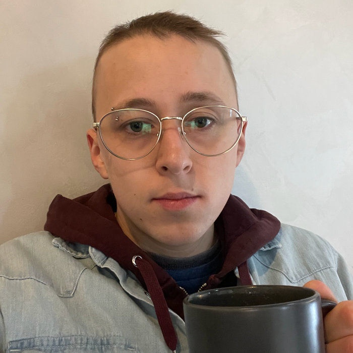

Biography
My name is Lucky Adams, and I am a game developer, artist, animator, software developer, QA tester, and songwriter. I have 16 of years experience developing games and 4 years of experience working professionally in software development. I am an ambassador for the Winnipeg Game Collective. My first self-published game is called Sea Birds: End of an Age. It released on Steam in 2019. My current (and most ambitious) project is a game called Single Feather.
